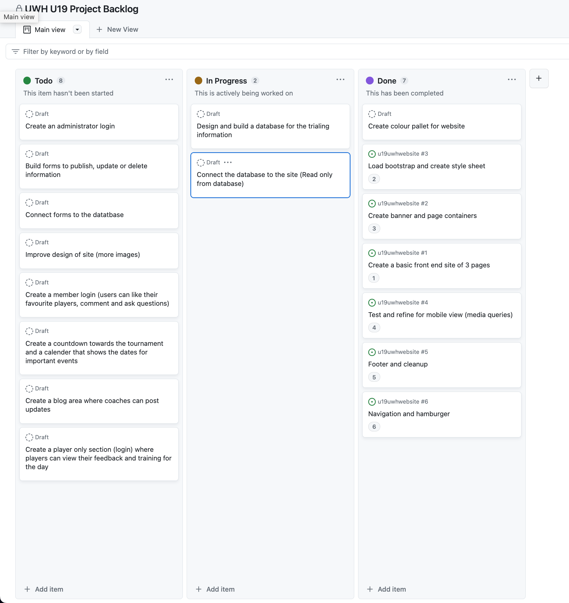
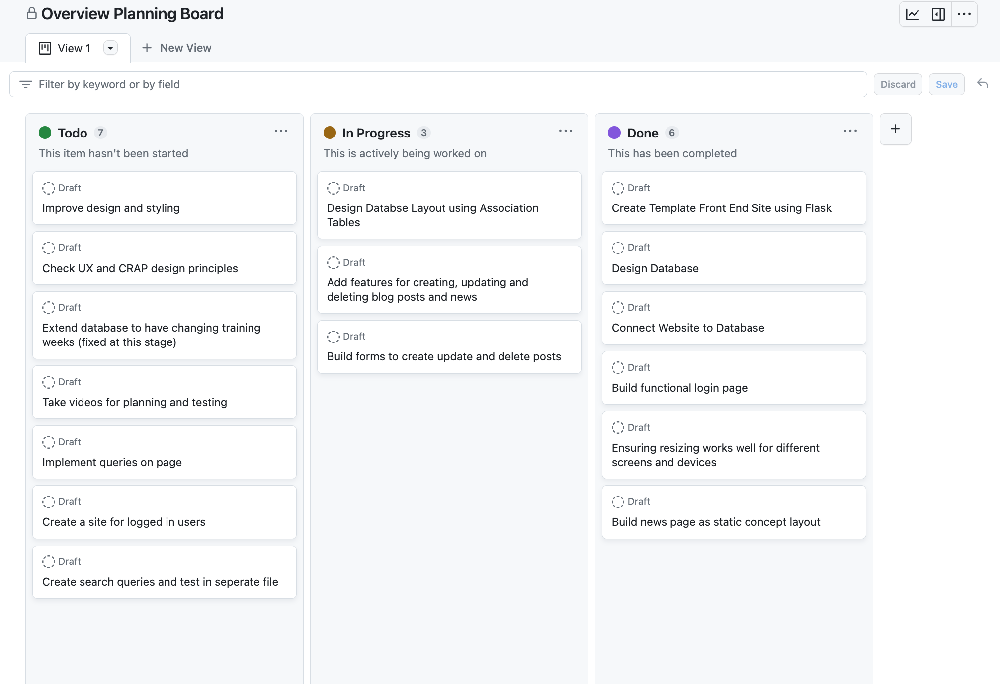

Brief
My aim is to design a website for the U19 NZ Girls UWH squad members, coaches, and supporters. I hope to create a common place to find information about camps, training and more which is accessible and useful for a range of consumers. Below are some basic aims of this project which will help me achieve checkpoints to build this in a structured process.
- Create a basic plan with layout designs, colour pallet and features of the website
- Research the kinds of people who will be interested in this product to cater to a certain demographic
- Look at websites that have had similar function in the past to find inspiration and see what did/did not do well
Initial Project Backlog
Here is a screenshot of my project backlog about halfway through my project
Big Overview Backlog Plan
This is a screenshot of the big backlog board of all the tasks that would need to be done throughout this project
Relevant Implications: Describe
Aesthetics
Does the program look attractive to its users? If a website or digital media does not look appealing to a user
they are unlikely to continue to use it and thus the website will be less successful. Does the colour pallet
and design match with the purpose of the website? Do the aesthetics of the website reflect its purpose?
Sustainability/Future Proofing:
Is the program easy to add new features to? Maintaining and adding to the program should be easy if the program has been well made.
Making a change should not require major reconfiguration of the code. This means that a program should be designed to avoid repeating
information. If the program is designed so that code is repeated, it makes it much harder and more prone to errors, to try and change
or alter any of the information if needed.
Usability:
Is the program easy to understand? Is the output of the program easy to understand for the user? The program should use regular
english and 'speak the user's language', not "tech" language to make sure that the user can easily understand the information they
are being presented. The commands and requests for input should be intiutive and not likely to cause confusion for the user.
Front End Development
Brainstorming and sketches
Sprint One
Sprint One Aim
In this sprint, I am developing a main menu for my program, where the user can choose between two options: To review the pasta menu or to quit the program completely. This will run in a loop, and I will be creating a function to print the menu when requested with the name of the item and its price.
Rough program plan

Sprint One Board In Progess

Basic Test of Program

This image shows the capabilities of the base code of my program. The menu can be viewed, or the user can quit the program.
Sprint review: Where to next?
In this sprint I designed an simple base program to print the menu for my pasta bar when requested from the user, as well as the prices of the pastas. I achieved this firstly by creating a number of basic functions such as 'get_integer' and 'get_string' which are basic ways to request user input with basic validation and can be called anytime an input is needed. Currently the validation is very fundamental, but will become more advanced as the program evolves. The user additionally has the option to quit the program if they wish. This is because the program runs in a loop that requests the user's menu choice until they click "Q" to quit, which terminates the loop. A short confirmation message thanking the user is then printed. To prevent a typical error, I have added a statement to my code, which converts the menu choice of the user to uppercase. This means that no matter whether the user uses a lowercase or uppercase, the input will be valid and not cause errors. One thing that I noted I need to address later, is that my pastas and their prices are written as one entity in the list. This means that right now I wouldn't be capable of adding together the prices of the pastas as they are not integers. I will address this error in more complex versions of this program.

This screenshot demonstrates how I can push my code onto my github depository using terminal. Unfortunately, I ran into an error while doing this, where my computer was unable to execute the command. The first way I resolved this was to do a forced push, which although not ideal, got the job done. Secondly, I checked all my files, passwords and other information in my depository to make sure everything was working and nothing was missing. This fixed the problem and I was able to push a sprint into my depository.
Backlog grooming

A few things in my backlog have been moved into the 'Done' section, as well as much of the validation being moved to 'In progress'. As it is currently very basic and will become more advanced as this project continues.
Sprint Two
Sprint Two Aim
In this sprint, I am constructing functions that will allow the user to select items from the menu. This will be based on their index number, and they can subsequently select a quantity (of up to 5) of the chosen dish. After this they can review their order, order more pastas or terminate the program.
Rough program plan

Sprint Two Board In pProgess

Basic test of program

The updates in my code mean that the user can now add pasta to their order. Not only this, but the program is also capable of storing this information and showing the user the contents of their order. This information can then be printed with the names and prices of the items in the order if requested.
Sprint Two Review

During this sprint, I ran into a several problems and errors. The first, was when the user selected an index that was out of the suitable range, the porgram continued to execute, and would not inform the user of the error until they were nearly finished with the order. *View screenshot*. To resolve this, I had to create a function that could assign a limit on the input of the user, so that they were told there had been an error and could try once more. I achieved this by creating a 'get_integer_limits' function where I can assign a lower and upper boundary on the user input each time the function is called.

Another problem I struggled with, was the length of sublists for printing. In the main 'print_list' function I created, I made it so that if the sublist did not contain not two entities, there was an error. This was effective when printing certain lists, like the main menu, but presented a problem when trying to print lists with three or more entities, as it would simply cause an error if called. To resolve this, I made a print function specifically for the review order list. This is so the two entity function can still be used, as it is frequently, but won't cause errors when I attempt to review the user order. One thing that I observed, is when the user is ordering, they are able to select a pasta they have already ordered and order more of them. This is satisfactory, but when reviewing the order, they are printed out separately although they are the same pasta. *View screenshot* In the upcoming sprints, I am going to advance this, so the program can recognize that these values are the same, and thus group them together. I moreover would like to do work on the validation that my program uses, as well creating functions for removing pizzas from the order and calculating the ultimate price of the users order.
Backlog grooming

Not many significant changed were made to my backlog after this sprint, but I added a few new things and some things were shuffled around.
Sprint Three
Sprint Three Aim
In this sprint, I am going to work a great deal on the validations that are used in my program, to make sure that the user can input something unexpected, and they will be provided with a useful error message. This will also prevent crashes and cause the program to be much more efficient. I will also develop a function that will add together the total cost for each of the pastas and then their combined cost.
Rough program plan

Sprint three board in progess

Basic test of program

The improvements made in this sprint have significantly improved the validation that my program is capable of providing. The user can now only enter quantities in a certain range when ordering their pastas, which means they can't end up with too many (over five), or a negative quanitity.
Sprint Three Review: Errors and Trials

An error I encountered during this sprint was in the addition of my pasta prices. When the user was ordering, the program would recognize one of each of the pastas instead of multiplying together the appropriate quantities. To resolve this, I assigned a variable for the quantity of each pasta and multiplied it with the number of the corresponding pasta, to obtain the correct price.

Another error I encountered during this sprint was in the removal of a pasta from the order. When the user was ordering. The user was able to remove more pizzas than their order contained, and therefore a negative amount of a pasta in the order. *see screenshot*. A similar error also occurred where the program would simply crash if the number inputted was out of the required range. To resolve this error, I created a validation that strictly allowed the user to input a number within a certain range. If their input was out of this range, they were indicated this with a clear error message and would have to try again.

The final challenge I faced in this sprint with was within my program's loops. If the user tried to remove a pasta from an order with no pastas in it, the loop would continue to request for fresh input, but their entry could never be valid. I didn't solve this error during this sprint, but it is one of the highest priority tasks on my project backlog, and I will adress is shortly in later sprints.
Backlog grooming

A few items have been move into the 'In progress' colomn, and several tasks have been moved into the 'Done' section. This is a very rewarding process. The backlog allows me to unpack and prioritise tasks in my program developement, so that I can stay on track to complete a usable program in the required time.
Sprint Four
Sprint Four Aim
In this sprint, I am going to work a lot of the validation in my code and make sure that there is no weirdly printed messages or errors. I am going to create several loops that will run and quit depending on the user input to make the program as efficient as possible.
Rough program plan

Sprint four board in progess

Basic test of program

The user can now add and remove pastas, as well as review their current order. The program provides thoughfully error messages
through developed validation to assue the required input.
Sprint Four Review: Errors and Trials

As explained in my sprint three reflection, there were some errors with the efficiency and clarity of my program.
*view image* The problem I found, was where if the user had ordered and then removed a pasta, it still showed the pasta,
just as a quantity of zero. I expermented with several ways of resolving this issue and trialed them all to find the
most effective one.

The first way I attempted, was to only have the program print the pasta in the order out if the quantity was greater than
zero. The purpose of this function was to loop through all the data in the customer order, and only print those with quantities
over zero. This worked effectively, but was not eliminating the problem, and essentially just wasn't displaying the data.

To properly clear up the issue that I was facing, I had to remove the pasta with quantity zero from the order list.
This meant getting rid of it completely, meaning it could not cause any problems or interferences later on. *view image*

As I mentioned in my previous sprint, I had a problem where if the user tried to remove a pasta of which they had none,
it would loop endlessly. In this sprint I wrote code that notified the user they hadn't ordered any pasta yet and that they
had to order before they could remove. They are shown this error and returned to the main menu.

This was a much more minor error, but I just didn't like the way my program dealt with unexpected input. When the user would
put in an entry that was not valid, my program would run its validation and then re-print the entire main menu again instead of
just asking for them to try once more.

I solved this by creating new functions and code to validate the input. I tested this several times and in many alternative
ways using a test file *see screenshot*. In this test file I would try new things to mark down what was working and what wasn't,
and could do this all without ruining the code I had already written in the main file. I felt free to trial things as I wasn't worried
about permenantly damaging the code I had already been working on.

Ultimately, I constructed a new function that would run through my list of letters. If the user input was not within this list,
they would be urged to try again. This loop was then implemented within my main menu code, so that the loop did not include
re-printing the whole menu.

The last error I want to discuss for this sprint, was some more validation. The problems at this point seemed endless, from crashes
to infinite loops and times where the interface simply formatted things incorrectly. Firstly, when the user would input an index they
would like to order that was not valid, this could sometimes cause the program to crash. I was puzzled as to why this was happening
only sometimes, while my validation worked perfectly well at other. I realised later I had made a mistake in the formatting of a specific
output, making the program unable to print what I was requesting. This was an extremely quick fix and the program is now running without crashes.

Next, if the customer ordered the same pasta twice, the porgram was unable to recognize this and printed them as seperate items in the review.
The screenshot on the left shows my code before I developed it.

This screenshot shows how the program reacts to a pasta that is not yet in the order. To test, I wrote a print command that would output 'Not yet in order',
that I could use as a checkpoint in my testing to make sure everything was running smoothly. In the final code, I am not going to have this print out, but
it was very helpful to check for errors.

This screenshot shows how the program npw reacts to a pasta that is already in the order. The user is told they already have this pasta in the order, how many,
as well as how many they can still order. The user is limited to only having up to five of any pasta, so cannot input a number that will bring them over that total.
From all the testing above, I have been able to produce code that performs well, without any errors in the tests I have done.
Backlog grooming

This sprint was quite significant in terms of the advance of my code, and I changed and corrected many errors and made several
updates to improve my program. From this point, I am going to start the work on delivery and pick up, with validation designed
accordingly.
Sprint Five
Sprint Five Aim
As explained in my sprint three reflection, there were some errors with the efficiency and clarity of my program. *view image* The problem I found, was where if the user had ordered and then removed a pasta, it still showed the pasta, just as a quantity of zero. I expermented with several ways of resolving this issue and trialed them all to find the most effective one.
The first way I attempted, was to only have the program print the pasta in the order out if the quantity was greater than zero. The purpose of this function was to loop through all the data in the customer order, and only print those with quantities over zero. This worked effectively, but was not eliminating the problem, and essentially just wasn't displaying the data.
To properly clear up the issue that I was facing, I had to remove the pasta with quantity zero from the order list. This meant getting rid of it completely, meaning it could not cause any problems or interferences later on. *view image*
As I mentioned in my previous sprint, I had a problem where if the user tried to remove a pasta of which they had none, it would loop endlessly. In this sprint I wrote code that notified the user they hadn't ordered any pasta yet and that they had to order before they could remove. They are shown this error and returned to the main menu.
This was a much more minor error, but I just didn't like the way my program dealt with unexpected input. When the user would put in an entry that was not valid, my program would run its validation and then re-print the entire main menu again instead of just asking for them to try once more.
I solved this by creating new functions and code to validate the input. I tested this several times and in many alternative ways using a test file *see screenshot*. In this test file I would try new things to mark down what was working and what wasn't, and could do this all without ruining the code I had already written in the main file. I felt free to trial things as I wasn't worried about permenantly damaging the code I had already been working on.
Ultimately, I constructed a new function that would run through my list of letters. If the user input was not within this list, they would be urged to try again. This loop was then implemented within my main menu code, so that the loop did not include re-printing the whole menu.
The last error I want to discuss for this sprint, was some more validation. The problems at this point seemed endless, from crashes to infinite loops and times where the interface simply formatted things incorrectly. Firstly, when the user would input an index they would like to order that was not valid, this could sometimes cause the program to crash. I was puzzled as to why this was happening only sometimes, while my validation worked perfectly well at other. I realised later I had made a mistake in the formatting of a specific output, making the program unable to print what I was requesting. This was an extremely quick fix and the program is now running without crashes.
Next, if the customer ordered the same pasta twice, the porgram was unable to recognize this and printed them as seperate items in the review. The screenshot on the left shows my code before I developed it.
This screenshot shows how the program reacts to a pasta that is not yet in the order. To test, I wrote a print command that would output 'Not yet in order', that I could use as a checkpoint in my testing to make sure everything was running smoothly. In the final code, I am not going to have this print out, but it was very helpful to check for errors.
This screenshot shows how the program npw reacts to a pasta that is already in the order. The user is told they already have this pasta in the order, how many, as well as how many they can still order. The user is limited to only having up to five of any pasta, so cannot input a number that will bring them over that total. From all the testing above, I have been able to produce code that performs well, without any errors in the tests I have done.
This sprint was quite significant in terms of the advance of my code, and I changed and corrected many errors and made several updates to improve my program. From this point, I am going to start the work on delivery and pick up, with validation designed accordingly.
In this sprint, I am going to construct functions for the user to select to have their order for delivery or pick-up, as well as enter the appropriate customer information dependent on response.
Rough program plan

Sprint five board in progess

Basic Test of Program


The updates I have made in this sprint mean that the program is now capable of requesting and appropriately storing customer details. The user can choose to pick up their order or have it delivered, and then confirm or re-enter their details. The user can then confirm their whole order and a confirmation message will be printed.
Sprint Five Review: Errors and Trials

In this screenshot, I show the error I faced when trying to get the user to confirm their details. Looking back, this is actually quite a simple error and was just something that I accidentally overlooked. The problem was, that when the user would confirm their details, the program would still continue with the loop of requesting their order confirmation again.

It ended up that I had forgotten to 'return None', which really just means my loop wasn't aware it was supposed to stop. This minor error taught me to be much more thorough in my code and make sure I haven't missed small details as they do make a difference.

This is not an error, but simply a test to improve the validation of my program. I developed functions that only allowed the user to input entries within a certain range of digits. This meant the user can only put in phone numbers within the valid range of phone numbers (9-12). I set a minimum digit limit on the address, which forces the user to be specific in their entry.

This screenshot shows the code I wrote for the phone number collection, with the digit parameters between 9 and 12 digits, and an otherwise error message.

This shows how the program reacted to invalid inputs once the updates had been made.
Backlog grooming

This was an interesting backlog update, as although I managed to move several things into the 'In progress' or 'Done' sections. I also began thinking of many new updates I wanted to make and features I wanted to add to my code, so the 'To do' section grew significantly larger.
Sprint Six
Sprint Six Aim
In this sprint, I work on minor errors and improving and strengthening the existing code in my program. I update and improve the functions for printing customer reciept and allow the user to confirm or alter their details.
Rough program plan

Sprint six board in progess

Basic Test of Program

I am very content with what I managed to achieve throughout this sprint. Over various forms of testing and several experiments with ideas, I managed to create a program that operates how I require it to (for now) , with no crashes and useful validation.
Sprint Six Review: Testing and Errors
This sprint was extremely significant in terms of overcoming errors and problems I ran into, and I wrote several notes along the way of things I wanted to document.
The image above shows I test I was doing. This test was to make sure the program was recognising how the user was planning to receive their order. This was beneficial because after making sure the correct processes were occurring within the code, I could subsequently improve upon what I had. If I hadn't have done tests like this, I could be making mistakes in the past that I forgot about, which will affect my code negatively in the long run.

Similarly to above, I got the program to print out the user details after they were entered to make sure it was collecting the correct information. This was advantageous because once I conducted this test, and the program was printing out the digit length of the phone number as opposed to the number itself. This goes to show how important running tests like these are for preventing errors in your code.

Another problem I encountered, was the user was able to enter their details twice, which caused crashes and errors for the program when trying to print the final receipt, as it did not know which set to use. I resolved this by writing code that informs the user whether there is existing data in the customer details list, and asks them whether they would like to erase and re-enter these, or leave them as they are. This means that there will no longer be double ups in the customer information and it causes one less error to be stressed about.

The biggest challenge of Sprint 6
In this sprint, I struggled a lot with getting the program to complete the order correctly. I ran through several tests (shown below), and attempted methods to have the program correctly confirm and then clear the order if that was the users choice. I initially decided I wanted to develop quite a large function with lots of code to confirm the order. The user would initially see what they had ordered and was subsequently asked for their choice of pick-up or delivery and then asked for their details and a confirmation. This was quite clunky and caused some chaotic code and weird loop errors. When the user confirms all details, they would still be sent back to the main menu and it had not been reset. What I have now decided to do is have separate functions for review order, enter details and complete order placement as well as other small function for things like 'get_delivery_details' and 'get_pickup_details'. This means none of the code gets jumbled up because of it all being in one place was doing and everything is much tidier having several smaller functions. After the user chooses to confirm their whole order the program prints their final receipt and clears the lists.
The first way I expected to achieve this was through a counter. I made an empty list called terminate, which was appended when the user chose to quit the program. This was problematic as I was putting functions inside functions, which is never a good idea. The theory was, that when this list was appended, the program would recognize that 'terminate' was not equal to zero and end the loop.


Shortly after drafting the code shown, I realised the error in my ways. I realised I did not want the whole program to quit and rather just required the order and user details to be cleared, so a new order could be placed. I decided I would do this by having the user choose to confirm their order, and then use .clear() to empty the lists since this order was now completed. This was much more useful than the previous attempt, as I did not need to involve a whole new list and append values. The code was much more succinct and less prone to errors in the future.

The image here shows an example of a completed user receipt. When the user choses to confirm this, their details and order will be cleared from lists and the operator can continue with the next.

In this sprint I additionally used a python style checker to make sure my code was not violating any major python conventions and that there was nothing likely to cause errors in my future. As you can see, it didn't go so well. It turns out I had many errors in my code, by fortunately many of these were the same. The recurring one seemed to be that my code lines were overly long. I am going to go through during my next sprint and shorten many of these lines as it improves readability and removes clutter. The other errors indicated in this test were to do with formatting (too many/too few linebreaks) and were easily fixed. The last error reported was I had been writing 'while run == True', and this is typically written as 'while run is True'. I quickly fixed this and the error count reduced significantly.

I was also indicated this error about four times, and was confused as to what it meant. I did some research and figured out that I needed to be more specific 'when naming' exceptions. I then corrected this error in my code and moved on.

Following shows another one of the errors this style checker alerted me of. It informed me that I could not just have a plain 'except' statement and that it had to be followed by a statement such as 'ValueError', letting the program know not to abrupty crash if a 'ValueError' were to occur. Previously, I had only had an 'except' statement, without any further clarification. This was a useful error to be notified of, as it may prevent my code from experiencing crashes in the future.

Backlog grooming

This was a very interesting and chaotic sprint. I started off with quite a loaded backlog, and I gradually realised it was too many adjustments to make within one sprint, therefore discarded some and transferred them back into my project backlog. Things such as adding special instructions and calculating GST were moved onto my next sprint, as there had already been so many changes in this one.
Sprint Seven
Sprint Seven Aim
In this sprint, I refine and polish much of my code, as well as fix a few minor bugs, and improve usability.
Rough program plans
This shows some psuedo code I wrote for different features throughout this sprint

Sprint seven board in progess

Basic Test of Program


The program is now capable of reacting appropriately to any user input. The program has been purposefully structured to provide logical responses to user inputs and be flexible to act appropeiately to avoid crashes and user confusion. The program no longer contains any bugs, and keeps information correctly stored or deleted on request. The program uses effective validation for handling expected, unexpected and boundary input.
Sprint Seven Review: Errors and Trials
I am unsure of how I did never noticed this in previous sprints, but when running some basic tests, I realised the program was still printing that the user had ordered zero of a pasta. This is suitable when the customer is simply in the order pasta function, as it cleary shows that they did not order any. The problem was that when the user reviews or confirms their order, it would still show the value as zero. I think this would be considerably better if it showed the user that they had ordered none, but then removed it from the list. This also causes an infinite loop if the user attempts to remove a pasta from their order as no number is within the appropriate range. I could not allow the user to enter zero pastas, but this would place them in a loop until they ordered some.


I attempted several alternative ways of fixing this. To begin with I wrote code in the review order function, that would remove the value from the list if the quantity was zero. This was a clever idea, but did not work in the end as it would not print the other pastas the if one had zero.

The next trial I carried out, was to remove a value if the quantity was zero in the add pasta function, once it had been appended to the list.

This also caused a crash, where the value I was requesting was out of the range of the list. This was unnecessarily confusing and I felt like I could come up with something much more simple.

In the end, the solution ended up being very simple. All I needed to do was only append the values if the amount was not zero. This prevented me from having to make new functions and remove or move values from lists. This only required two lines of code and perfectly solved the problem how I wanted.

I was immensely relieved that this had been sorted out, but it caused some minor formatting issues. If the user has an empty basket and requests to review their order, they are displayed nothing and sent back to the main menu. This is because there is no order to review, but it would be extremely convenient to receive a useful message alerting the user of why the program reacted in this way. This was easily added and is currently completed.

I ran through my program several times, searching for errors but was struggling to identify how I could improve. I decided it would be ideal to have a third party run through my program a few times. I asked them to note what they noticed as well as what features they think it would benefit from. This was also a useful test of the usability. It turned out there were quite a few errors that I can improve on *view screenshot*.

The error shown above shows how although the user should be inputting their phone number, the program currently accepts letter input, which may cause problems and confusions. I resolved this by limiting what the user was able to input to numeric values, and they are shown an error is an alphabet character is entered. The user was equally able to input numbers for their name and I discovered this was a lot harder to solve. *view screenshot*

This is a trial I conducted to attempt to improve the formatting of my code. I wanted the program to print "You can add no more of this pasta" instead of "You can order up to 0 more." I achieved this by writing code in an 'if' statement that would print this.


I ended up not implementing this code in the end, as it was unnecessary and caused much clutter. In the screenshots you can see the initial way it was printed and the way that I trialled writing the code.
I asked my parents and friends to try using my program, so that I could confirm everything was clearly communicated and there were no errors I had missed. The first problem was when I asked the user which of the pastas they wanted to remove, I wrote "Choose index number." This confused the user as some thought the index number of the pasta was its number in the initial list.

Based off of the advice offered from my peers and parents, I decided to phrase it to say "Which pasta would you like to remove." This is much more clear than before and will not cause confusion.

Another critique I received from friends, was that when they chose not to confirm details, there was no option to return to the main menu instead of trying again. I investigated a few ways to achieve this. The first way I tried as to write a separate function where the user was asked to choose whether to return to the main menu or erase their details and try again. This did not work as well as it could, as it was way overcomplicating something that could be done much more simply.

Ultimately, I decided to formulate the code asking the user this question within the delivery function. I initially didn't want to do this as it would involve an 'if' statement inside and 'if' statement and I had been under the impression that this was not conventially allowed in code. I realised this was not the case and rote the code like this. It worked much better and didn't involve producing a whole new function.

I next decided to improve the functions I had developed for acquiring the user name, address and phone number. This was because through tests, I found the user was capable of entering letters when asked for the phone number and was able to enter numbers when asked for the name.


I initially decided to make separate functions for each, where I would write a .isdigit() or .isalpaha() statement. This worked correctly, except since I asked for alphabet input for the name, when the user used a space, the program would not accept it. I decided it was unnecessary to have the .isalpa(), and the user can have their name as whatever they would like. I kept a .isdigit() on the phone number, as a phone number with a space would be invalid anyway.
I wanted to condense this code into one function that I could call when needed. I completed this by creating the function follows in this screenshot. I could assign values a and b as the limits to the length of the string and call it for the name, phone and address.

Another problem I encountered throughout my usability testing was that if the user used spaces in or around their input, the program did not recognise the entry and rendered it invalid. I solved this by adding a .strip() command at the end of some code lines, as well as having the program replace any spaces with no space, by using a .replace() command. Following are screenshots of the way the program reacted before the change.


This is a screenshot showing the code I wrote to solve this error. By using .strip(), spaces from the outside of the writing are eliminated, and by using .replace(), any spaces within the entry are removed.
The next usability error I addressed, was the intuitive nature of my main menu options. At the start, I had A, B, C... descending for the different options. I thought this was a good idea, but it turned out to cause a lot of confusion. The option to add a pasta was associated with the letter 'B' instead of 'A' to add. This meant that the user would often press the wrong letter if they assumed it was the correct one.

I decided to solve this by changing the letters associated with the different options to be either the first letter of the descriptive statement e.g V for view menu, or something that made more logical sense like 'F' for complete order, as the user is finishing.

After running through what I thought was my finished program several times, I found I still had two remaining errors that needed fixing. The first was that when the user removed all of a pasta from an order with multiple pastas, the program would still print an error message saying "Your basket is now empty". This was because the program was reconizing the quanitity of pasta as zero, and printing that the basket was empty.

When reviewing the order, the program would still show the pastas the user had, but was simply thinking that as the quantity of pasta x is zero, the order must be empty. Additionally, when the user removed all the pasta from their order, it printed an empty message saying "In your basket you now have:", followed by nothing. I did not like the way this was formatted and wished to change it.

I tried a few ways to solve this. The first was to alter the code to print the basket no matter what was in it, but this led to formatting issues and printing double reviews. This was not acceptable, and did not reach the standard I wanted for my program, so I had to try another way. By writing the code in this way, the problem was mostly solved. The only remaining issue was that an order with remaining pastas would be printed twice, as it was recognizing that the amount was not zero, as well as the length of the order list not being zero.

I solved this by altering the code involved in printing out the updated user order after removing or reducing a pasta. I made the if statements much more clear and made sure there was no overlap in them so that there was no double printing.

Another error, was that when the user input an invalid entry when confirming their details, they loop reset itself. Ideally, the program should just ask for the user to try again, and not restart the whole loop.

I tried solving this by taking the data entry request and receipt message out of the loop, and leaving the confirmation in the loop. This meant that when the user input something unexpected, the program would loop through the program without all of the unneccesary clutter.

This did not work as if the user chose to not confirm their details and re-enter, the program still asked them to confirm. After many more trials and a discussion with my peers and teacher, I realised the solution was much more simple than I had thought.

All I had to do was make a seperate function called get_yes_no(), where I could ask for the user entry and this would run its own loop until given a valid input. This turned out to be a very useful function that I could implement into other areas of my code as well.

This screenshot shows the final code, which is fixed and working as I required.

I put my code through the same style checker once again as I knew there were still several errors that I had chosen to resolve at a later date. Firstly, I used the style checker that is built into the PyCharm Software, which was also useful for catching spelling mistakes within my code. After this, I entered the code into an online style checker and received only this message *view screenshot*. At this point, I began some research into alternative ways to shorten my lines of code, as the main style error I was informed about by a style checker was that my code lines were excessively long. I went through my code and shortened several of the function names to two words or less.

I then went through all of my code, shortening lines one by one with line breaks and word reduction, to iradicate this error from my code. Not only does this match with python coding conventions, but my code is also now much clearer. The text is simple to read and I do not miss any words or important information from it being cut off the screen.

Nearing the end of my project, I realised that I had yet to fully doctype and comment my document. This is very important for any coding document as is informs any viewers and users of what each function, variable and argument means and what sort of value is being requested. The screenshot shown here is an example of the kind of doctyping that I did in all of my functions.

Backlog grooming
The following screenshots illustrate the seventh and final of my backlog updates. A large quantity of tasks have now been moved into the 'Done' coloumn, with several remaining in the 'To do'. This is because although my program could be further updated, I have completed all the tasks and added all the features I was required and able to for this assessment.


Video Run Through
This shows a history of all the commits I have made to my git repository. Reflecting, I believe it would have been beneficial to reduce the changes made in sprint seven, and create an eigth sprint. This is becuase I continued to encounter errors and problems, which led to very lengthy planning and trials for this sprint.

Overall Reflection
What I would do differently:
If I were to develop a new program like this, I think it would be beneficial to make a much more thorough plan of the program beforehand.
I could use this to be very specific on what I wanted to achieve and how I was intending to do this. I think each sprint could use a more specific backlog that is to be altered as the
sprint proceeds.
What I learnt:
Overall, I have learnt a lot about error prevention and many techniques to aid with this. Firstly, I think it is very helpful to check your code really
thoroughly every once in a while to find any errors or coding mistakes you may have missed. I also learnt how important it is to try to separate almost every action into its own function.
This means that if an error occurs within that function, I can make a change once and it will be immediately solved everywhere it was called. I also learnt a lot about doctyping and how useful
this is in making you code clear and easy to understand. Overall, my knowledge about code and the processes involved in a successful program development has been expanded a lot and I feel much more
confident in my abilities.
Revelant Implications: Address
What have I done to make sure that my program respects user privacy?:
I have designed my program to clear all the information input by the user when the order is complete. This means that their order and customer details are deleted and can not be retrieved.
In a more advanced program, the program may store the user information for later orders, but I have decided against this in mine. I tested this by adding in code that prints the user details,
and running this once the order had been complete. The results were that the list containing customer details was now empty, which was the correct protocol. This means that after an order is
completed, no third parties or other user can access the information of past users, keeping them safe from any predators.
What have I done to make future proofing easier?:
I have made sure that the functions are appropriately named and well organised. This means that if I were to come back to the progra,, at a later date to add any new code or make adjustments,
the code will be easy to understand and alter. I also thoroughly doctyped and commented my code, so that I know what purpose each function serves and what each argument represents. I also
tried to compress any process that was repeatedly used into a function, so that it could be called when needed. By doing this, I prevented having to write almost identical code several times,
meaning there is much less clutter within functions. This also means that if changes need to be made for a certain process or command, a change only needs to be made once, instead of several
times throughout the code.
What have I done to make my program user friendly (usability)?:
I have made sure that the program 'speaks the users language'. I did this by making sure all my request messages were clear, so the user knew exactly what they were expected to do. I also tried
to make my error messages and requests human-like, by making them slightly less formal. This means that the user can understand much more clearly what is expected of them. I also asked several
friends and family members to try using my program and critique me on what they found difficult or confusing. As can be seen in many of the changes made in Sprint Six and Sprint Seven, they had
quite a lot of feedback. This means I now know that the interface of my program will be understood by a range of people and not just make sense to myself and those in the coding world.